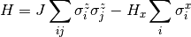
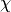
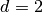
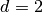
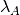
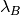

2. iTEBD¶
Time evolution block decimation is one of the most simple and sucessful Tensor network method [Vid07]. The core concept of this algorithm is to use the imaginary time evolution to find the best variational ansatz, usually in terms of Matrix product state (MPS).
Here, we use a 1D transverse field Ising model (TFIM) as a simple example to show how to implement iTEBD algorithm in Cytnx and get the infinite system size (variational) ground state.
Consider the Hamiltonain of TFIM:

where are the pauli matrices. The ground state can be represent by MPS as variational ansatz, where the virtual bonds dimension  effectively controls the number of variational parameters, and the physical bonds dimension  is the real physical dimension (here, for Ising spins ).
is the real physical dimension (here, for Ising spins ).
Because the system has translational invariant, thus it is legit to choose unit-cell consist with two sites, and the infinite system ground state can be represented with only two sites MPS with local tensors and associate with the schmit basis and ,  are the diagonal matrices of Schmidt coefficients.
- Vid07
G. Vidal. Classical simulation of infinite-size quantum lattice systems in one spatial dimension. Phys. Rev. Lett., 98:070201, Feb 2007. URL: https://link.aps.org/doi/10.1103/PhysRevLett.98.070201, doi:10.1103/PhysRevLett.98.070201.